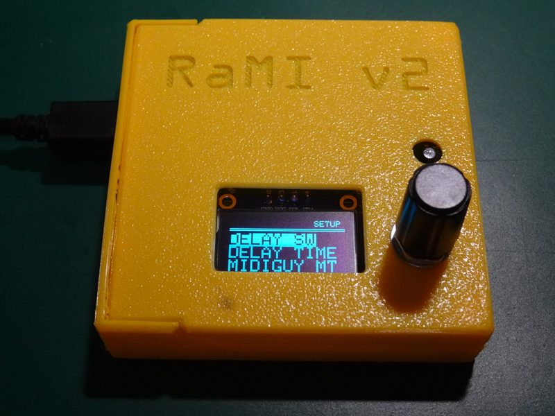
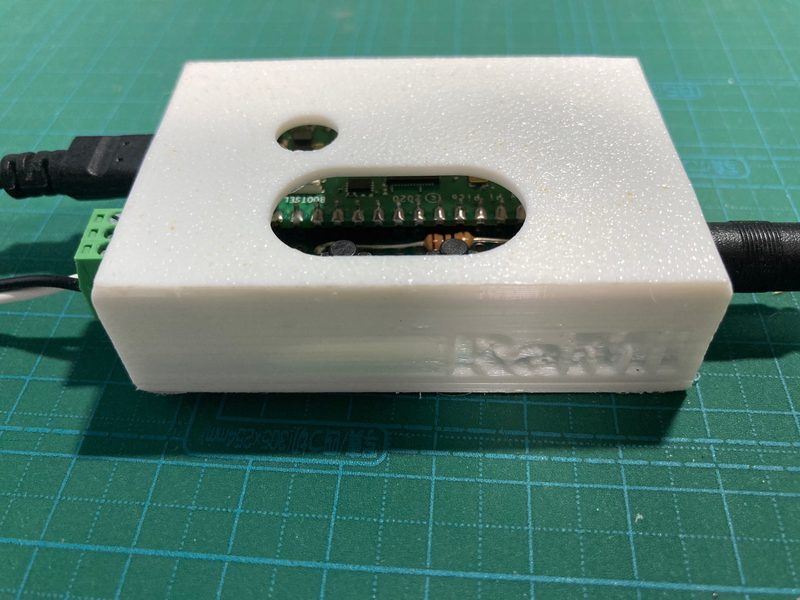
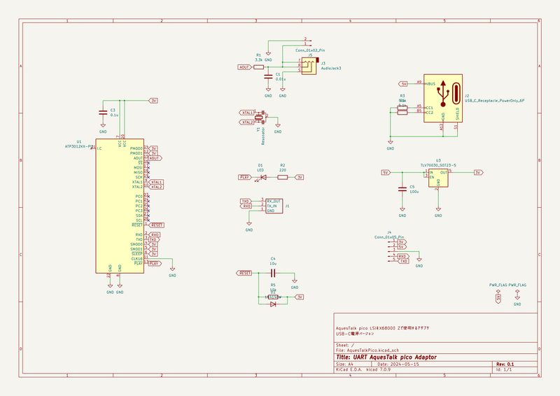
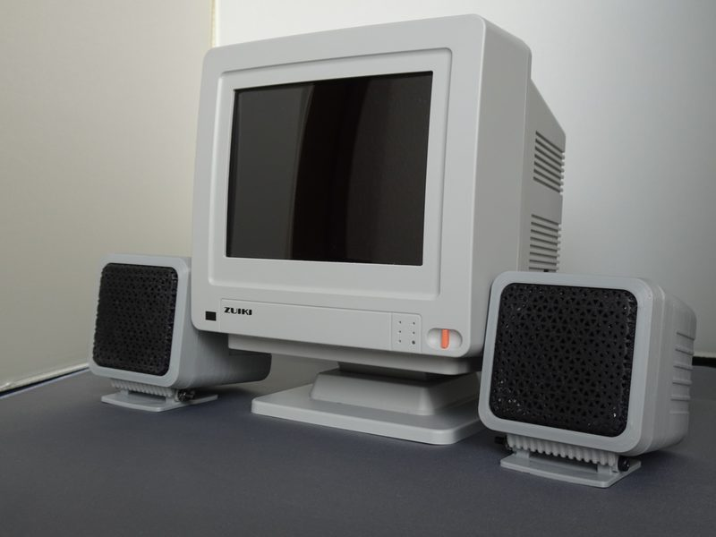
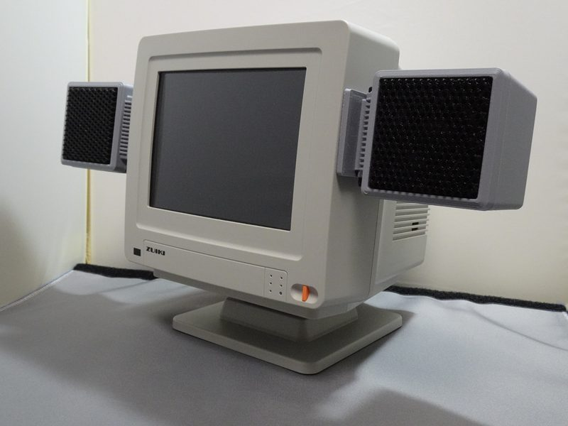

レトロPC エミュレータ・周辺機器
PC-8801 をはじめとする 8bit PC 向けのエミュレータと、実機につなぐ周辺機器。
X68000 / X68000 Z ハードウェア
X68000 Z につなぐ MIDI・音声合成のアダプタと、3D プリントで作るスピーカーケース。

RaMI v2
X68000 Z 用の MIDI インターフェイス。MIDI のタイミングを遅らせて内蔵音源と揃える機能と、MIDI 野郎の音色を MT-32 互換にする機能を持ちます。

RaMI
Rs-atodashi-MIdi。X68000 Z で RS-MIDI と内蔵音源を同時に鳴らすと MIDI が先に鳴ってしまうのを、MIDI データを少し遅らせて出力することで解消します。

AquesTalkPicoForX68000Z
音声合成 LSI「AquesTalk pico」を X68000 Z で使えるようにするアダプタ。回路図と部品表を公開しています。

ZSPK
X68000 のディスプレイ用っぽい雰囲気の 5cm スピーカーケース。3D プリント用の STL データです。

ZSPK15
ZSPK の 1.5 インチ（40mm）スピーカー版。組み立て手順つきの 3D プリント用データです。
X68000 ソフトウェア
X68000 で動くプログラムと、X68000 用のデータを作るツール。
panicCreationKit
PNG 連番・動画・音声から、X68000 用アニメーション再生システム「ぱにっく」のデータ（.pan）を作るツール群。スプライトや BG を重ねたシーン、ADPCM と FM 音源（Z-MUSIC）の音も扱えます。
RogueClone2X68k
「データ分離版ローグ・クローンII」を X68000 / X68000 Z 用にビルドしたもの。XM6 TypeG と X68000 Z で起動を確認しています。
eject
X68000 でフロッピーディスクをイジェクトするコマンド（eject.x）。複数のドライブをまとめて指定できます。
ゲームコントローラ
Raspberry Pi Pico で作る USB のゲームコントローラ。基板データとファームウェアを公開しています。